SAYS
登陆/注册

OSID码
Open Science Identity

为千万名科技与学术工作者
提升四层影响力
免费试用

简 介
SAYS介绍
SAYS是Scientists at Your System的简称。
是帮助期刊社与千万名科技与学术工作
者产生持续性交互，扩大科技、学
术影响力的现代工具。使用SAYS
的期刊，在世界范围内都是
“降维打击”的
OSID介绍
OSID码是
Open Science Identity的缩写。
论文作者的科技、学术影响力因借助
OSID码产生的四层交互动作而急剧提升；读
者理解得更快更清晰，能节省翻阅庞大资料的时
间精力花费，并能与作者直接一对一交流，同千万
同行业同领域科技、学术工作者在线探讨、抱团合作。

产品服务
行业解决方案
扩大期刊影响力；让作者科技、学术成果“高被引”；让读者读的简单，查得快，同行交流“一键即达


- 提供“高被引”，“高被看”的先天条件，提升影响力；
- 提供珍贵的科技工作者行为数据；
- 为千万科技工作者直接产生交互提供平台载体。
- 为作者和读者的服务能力提升四层影响力；
- 参与科技、学术工作者的交流，掌握前沿数据及讯息；
- 收入及行业地位随之提升。


- 论文的展现形式更立体，传播速度更快，范围更广；
- 与同领域科研工作者直接在线对话交流，开拓人脉圈；
- 将以前因篇幅有限无法交流的科技、学术内容完整交流及展示。

服务群体
-
 科技类期刊、学术性期刊
科技类期刊、学术性期刊 -
ddd期刊社编辑
-
学术、科技工作者
OSID四层影响力
1分钟语音介绍论文
作者用手机录一段一分钟的语音，介绍所著作的论文，帮助读者快速清晰了解本文所展示的科技、学术内容及成果。
作者在线问答
读者对于该科技、学术论文中产生了疑问，或认为有值得与作者就该领域进行探讨之处，可通过手机进行语音、文字在线提问
精彩问答集合
可承载与该论文课题相关的科技、学术交流的精华内容，作为文章的额外补充及配套展示，极大程度节省了读者的找寻成本。
学术交流圈
专家、作者、读者可通过OSID频道直接进行在线科技、学术交流。这是千万科技、学术工作者建立自己所在圈层的空间。
产品体验
 SAYS期刊社
SAYS期刊社
-
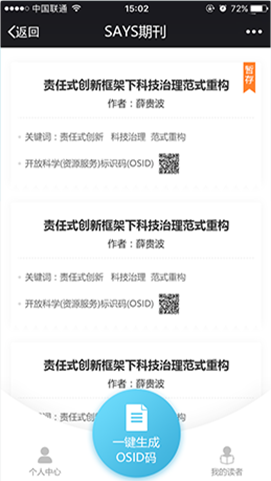
-
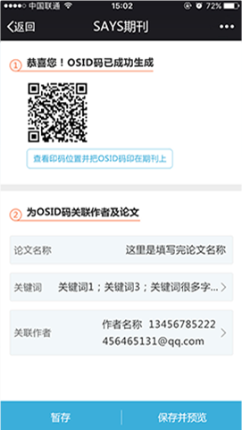
- 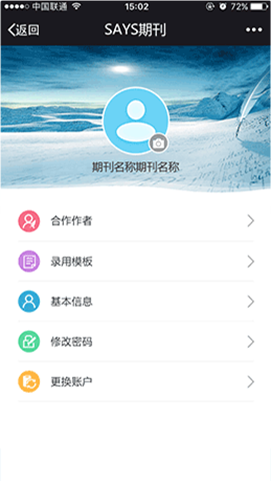
-
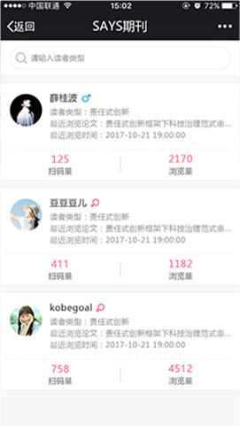
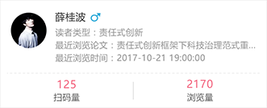
-
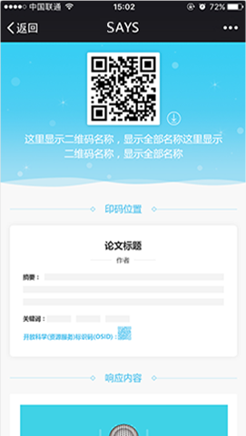
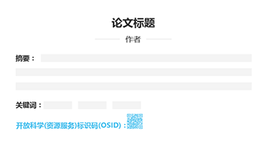
-
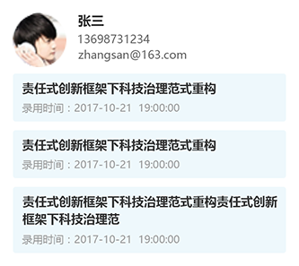
产品体验
SAYS作者端
- 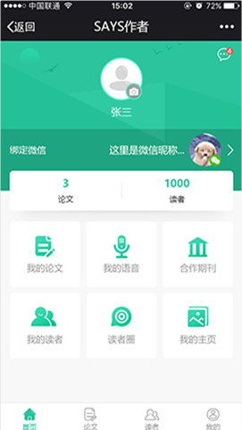
- 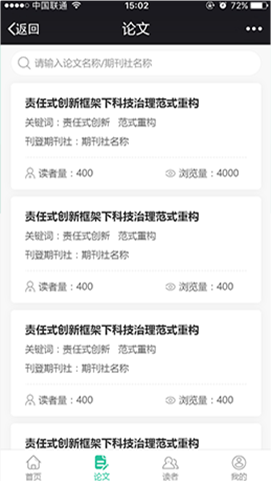
- 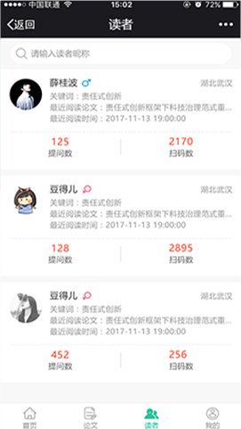
- 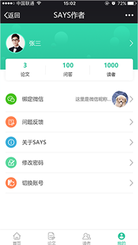
经典案例
-
500篇论文已添加OSID标识码
-
120位合作作者
-
290家期刊社入驻
高校通识教育课程教学评价体系改革
 竹涛
竹涛 教学评价 过程性评价
教学评价 过程性评价 1021
1021点击体验5
高校通识教育课程教学评价体系改革
竹涛 教学评价 过程性评价 1021点击体验1
高校通识教育课程教学评价体系改革
竹涛 教学评价 过程性评价 1021点击体验2
高校通识教育课程教学评价体系改革
竹涛 教学评价 过程性评价 1021点击体验3
高校通识教育课程教学评价体系改革
竹涛 教学评价 过程性评价 1021点击体验4
高校通识教育课程教学评价体系改革
竹涛 教学评价 过程性评价 1021点击体验5
高校通识教育课程教学评价体系改革
竹涛 教学评价 过程性评价 1021点击体验1
高校通识教育课程教学评价体系改革
竹涛 教学评价 过程性评价 1021点击体验2
查看更多案例
- 商务合作
- 电话：18062026009
- QQ：249115562

- 操作服务
- 电话：15926459426
- QQ：529284122
2018 © SAYS platform. All rights reserved.